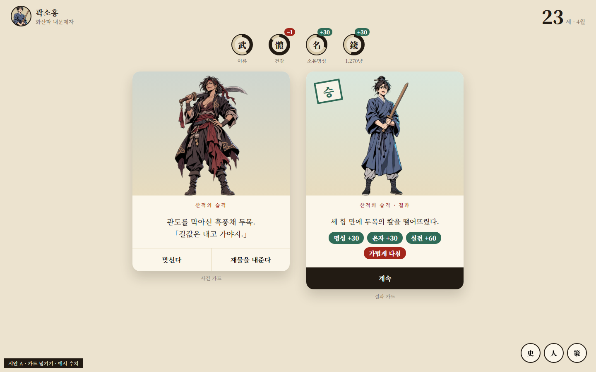
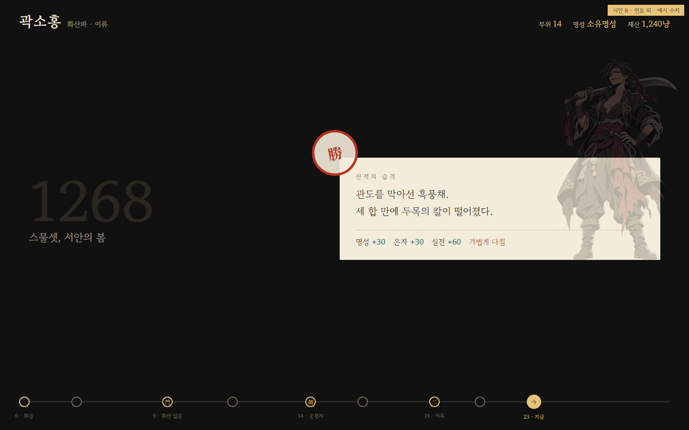
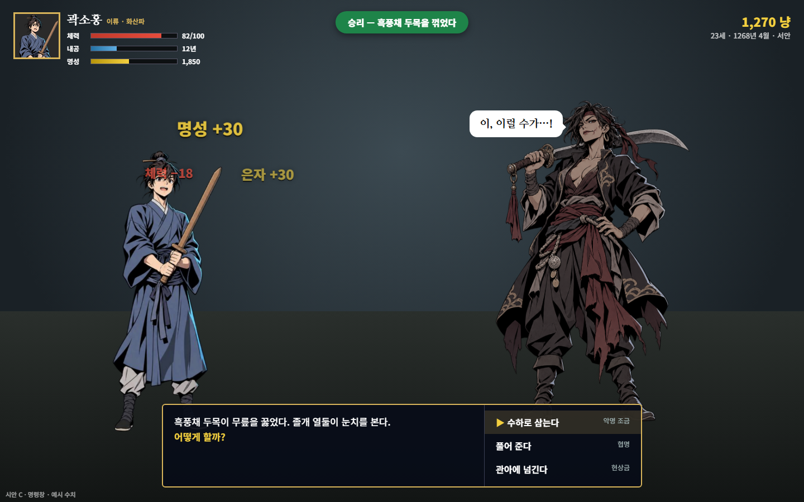
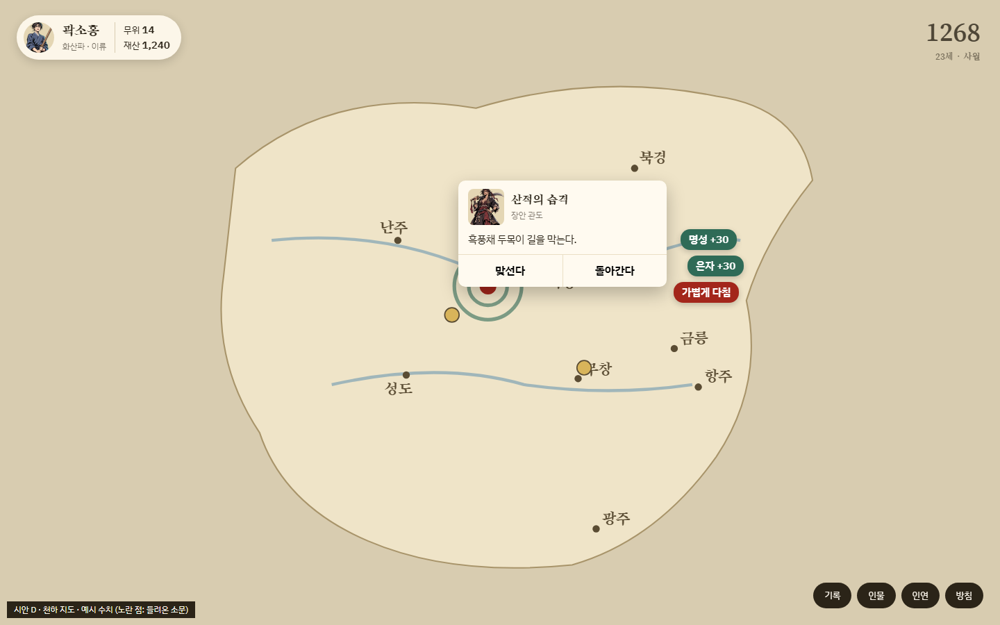

UI 시안 넷 (예시 수치, 저장하지 않음)

A · 카드 넘기기
사건 카드 한 장, 위에 네 게이지. 결과는 도장과 변화량 배지.

B · 연표 띠
아래 생애 연표, 가운데 그해의 장면. 결과는 붉은 도장.

C · 명령창
상태 막대, 상대와 말풍선, 아래 명령창. 결과는 숫자가 튄다.

D · 천하 지도
지도 위 내 위치와 사건 핀. 결과는 지도 위에 뜬다.